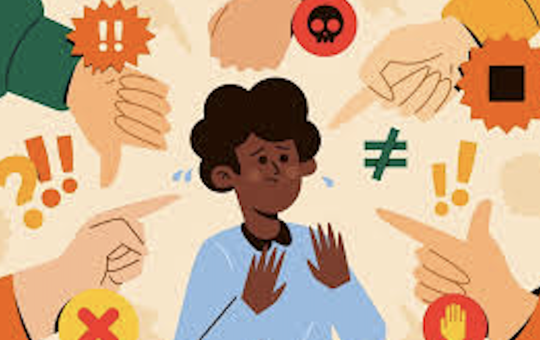
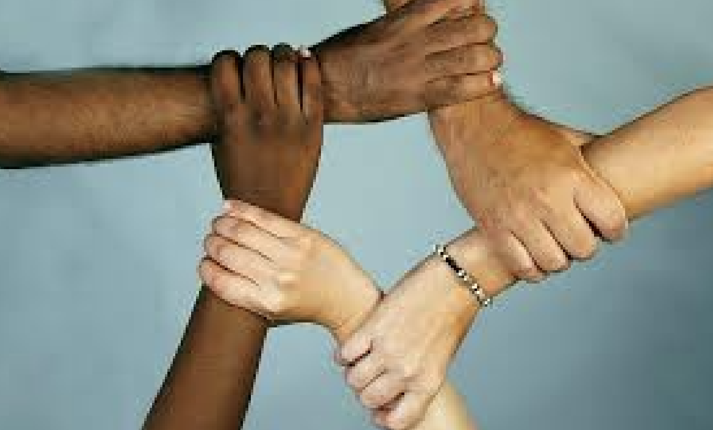
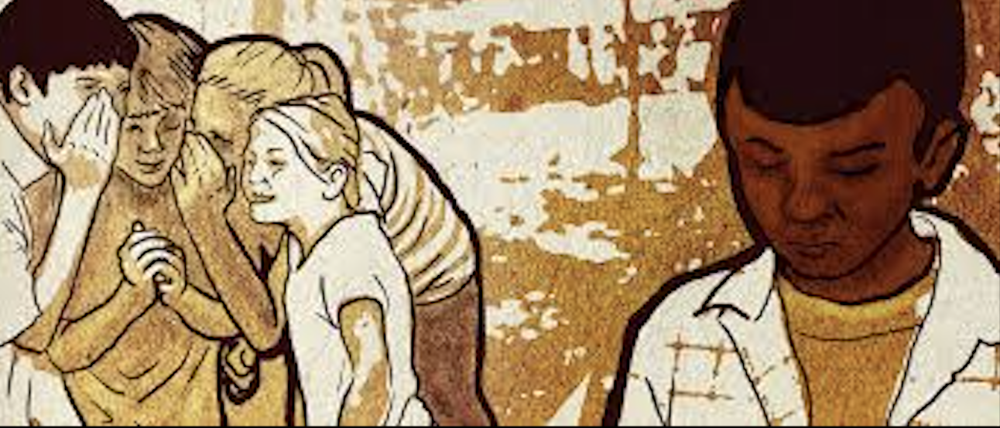

Principales Causas
cEl racismo tiene diversas causas sociales, culturales e históricas. Una de las principales es la transmisión de prejuicios y estereotipos de generación en generación, ya sea en la familia, la comunidad o algunos medios de comunicación. También surge por la falta de conocimiento y convivencia con personas de diferentes culturas, lo que puede generar miedo o rechazo hacia lo que se considera diferente. Además, las desigualdades históricas y sociales han contribuido a mantener actitudes discriminatorias en muchas sociedades.

Las consecuencias del racismo afectan tanto a las personas como a la sociedad. Las personas que sufren discriminación pueden ser excluidas de oportunidades educativas, laborales y sociales, además de experimentar problemas emocionales como baja autoestima, ansiedad o depresión. A nivel social, el racismo genera conflictos, división entre grupos y desigualdad, lo que dificulta la convivencia pacífica y el desarrollo de una sociedad más justa e incluyente.

Para reducir y eliminar el racismo es fundamental promover la educación basada en el respeto, la igualdad y los derechos humanos. También es importante fomentar la convivencia y el diálogo entre personas de diferentes culturas para fortalecer la comprensión mutua. Asimismo, las leyes contra la discriminación deben aplicarse de manera efectiva y la sociedad debe participar activamente denunciando actos racistas y promoviendo el respeto a la diversidad cultural.